<title>UniQCAI at a Glance</title>
<link rel="preconnect" href="https://fonts.gstatic.com" crossorigin>
<link rel="stylesheet" href="https://fonts.googleapis.com/css2?family=Inter:wght@400;500;600;700&family=JetBrains+Mono:wght@400;500&display=swap">
<style>
  /* The product's own tokens (docs/THEME.md), so the page and the screens
     inside it are the same piece of design. */
  :root{
    --ink:#171b21; --ink-soft:#4f5967; --ink-faint:#6b7684;
    --paper:#fafbfc; --surface:#ffffff; --sunken:#f4f6f8;
    --rule:#dde2e8; --rule-strong:#c4ccd5;
    --accent:#2a45cc; --accent-soft:#eef3ff;
    --good:#15803d; --good-soft:#dcfce7;
    --shadow:0 1px 2px rgb(16 24 40 / .06);
    --shadow-lift:0 12px 32px rgb(16 24 40 / .10);
    --sans:"Inter",ui-sans-serif,system-ui,"Segoe UI",Roboto,sans-serif;
    --mono:"JetBrains Mono",ui-monospace,SFMono-Regular,Menlo,monospace;
  }
  @media (prefers-color-scheme:dark){
    :root:not([data-theme="light"]){
      --ink:#f4f6f8; --ink-soft:#97a2af; --ink-faint:#6b7684;
      --paper:#0d1014; --surface:#171b21; --sunken:#262c35;
      --rule:#262c35; --rule-strong:#3a424e;
      --accent:#3d5ce8; --accent-soft:#1d2c69;
      --good:#4ade80; --good-soft:#052e16;
      --shadow:0 1px 2px rgb(0 0 0 / .45);
      --shadow-lift:0 12px 32px rgb(0 0 0 / .55);
    }
  }
  :root[data-theme="dark"]{
    --ink:#f4f6f8; --ink-soft:#97a2af; --ink-faint:#6b7684;
    --paper:#0d1014; --surface:#171b21; --sunken:#262c35;
    --rule:#262c35; --rule-strong:#3a424e;
    --accent:#3d5ce8; --accent-soft:#1d2c69;
    --good:#4ade80; --good-soft:#052e16;
    --shadow:0 1px 2px rgb(0 0 0 / .45);
    --shadow-lift:0 12px 32px rgb(0 0 0 / .55);
  }

  *{box-sizing:border-box}
  body{
    margin:0; background:var(--paper); color:var(--ink);
    font-family:var(--sans); font-size:17px; line-height:1.6;
    -webkit-font-smoothing:antialiased;
  }
  .wrap{max-width:1084px; margin-inline:auto; padding-inline:20px}
  .narrow{max-width:62ch}

  /* --- opening --- */
  .mast{padding-block:72px 56px}
  .eyebrow{
    font-family:var(--mono); font-size:11.5px; font-weight:500;
    letter-spacing:.11em; text-transform:uppercase; color:var(--accent);
  }
  h1{
    font-size:clamp(44px,7vw,76px); line-height:1.02; font-weight:700;
    letter-spacing:-.035em; margin:18px 0 0;
  }
  .promise{
    font-size:clamp(20px,2.6vw,25px); line-height:1.45; color:var(--ink-soft);
    max-width:24ch; margin:22px 0 0; text-wrap:balance;
  }

  /* --- sections --- */
  section{padding-block:56px; border-top:1px solid var(--rule)}
  h2{
    font-size:clamp(26px,3.6vw,34px); line-height:1.18; font-weight:650;
    letter-spacing:-.022em; margin:0 0 16px; text-wrap:balance;
  }
  p{margin:0 0 18px}
  .lede{font-size:19px; line-height:1.55; color:var(--ink-soft)}
  strong{font-weight:600}

  /* --- figures --- */
  figure{margin:34px 0 0}
  .fig{
    overflow-x:auto; border:1px solid var(--rule); border-radius:12px;
    background:var(--surface); box-shadow:var(--shadow-lift);
  }
  .fig img{display:block; width:100%; min-width:700px; max-width:100%}
  figcaption{
    font-size:14px; color:var(--ink-soft); margin-top:12px; max-width:60ch;
    line-height:1.5;
  }

  /* --- platform chips --- */
  .chips{display:flex; flex-wrap:wrap; gap:10px; margin-top:26px; padding:0; list-style:none}
  .chips li{
    display:flex; align-items:center; gap:10px; background:var(--surface);
    border:1px solid var(--rule); border-radius:999px; padding:9px 18px 9px 14px;
    font-size:15.5px; font-weight:500; box-shadow:var(--shadow);
  }
  .chips i{width:9px; height:9px; border-radius:50%; flex:none}

  /* --- promises --- */
  .counts{
    display:grid; grid-template-columns:repeat(auto-fit,minmax(240px,1fr));
    gap:0; margin-top:30px; border-top:1px solid var(--rule);
  }
  .counts div{padding:24px 24px 24px 0; border-bottom:1px solid var(--rule)}
  .counts h3{
    font-size:17px; font-weight:600; margin:0 0 8px; letter-spacing:-.01em;
  }
  .counts p{margin:0; font-size:15.5px; color:var(--ink-soft); line-height:1.55}

  footer{
    padding-block:44px 64px; border-top:1px solid var(--rule);
    font-size:13.5px; color:var(--ink-faint);
  }

  @media (max-width:640px){
    body{font-size:16px}
    .mast{padding-block:48px 40px}
    section{padding-block:42px}
    .promise{max-width:none}
  }
  @media print{
    body{background:#fff; color:#000; font-size:11pt}
    .fig{box-shadow:none}
    .fig img{min-width:0}
    section{page-break-inside:auto}
    figure{page-break-inside:avoid}
    h2{page-break-after:avoid}
  }
  :focus-visible{outline:2px solid var(--accent); outline-offset:2px; border-radius:4px}
  @media (prefers-reduced-motion:reduce){*{animation:none!important; transition:none!important}}
</style>

<header class="mast">
  <div class="wrap">
    <span class="eyebrow">Digital Upshot</span>
    <h1>UniQCAI</h1>
    <p class="promise">Every quick-commerce report, collected for you, in one
      place.</p>
  </div>
</header>

<section>
  <div class="wrap">
    <div class="narrow">
      <h2>The morning it replaces</h2>
      <p class="lede">Five portals. A sign-in code emailed at each one. The same
        date range typed five times. About an hour a day.</p>
      <p class="lede">And afterwards, no way to prove which dates a file actually
        covered — several of these exports carry no dates inside them at all.</p>
    </div>
  </div>
</section>

<section>
  <div class="wrap">
    <div class="narrow">
      <h2>Who does what</h2>
      <p class="lede">Setting up is ours, and happens once per brand. Collecting
        is automatic. Using it takes your team seconds.</p>
    </div>
    <figure>
      <div class="fig"></div>
    </figure>
  </div>
</section>

<section>
  <div class="wrap">
    <div class="narrow">
      <h2>Setting it up</h2>
      <p class="lede">Connecting a brand to a platform takes a few minutes, and
        ends with a <strong>real sign-in you watch happen</strong> — step by
        step, while it happens. Nothing is saved on trust.</p>
    </div>
    <figure>
      <div class="fig"></div>
      <figcaption>The same screen in light and dark. UniQCAI follows whatever
        each person's device is set to.</figcaption>
    </figure>
  </div>
</section>

<section>
  <div class="wrap">
    <div class="narrow">
      <h2>Then it collects on its own</h2>
      <p class="lede">On a timetable, or whenever you press the button. You can
        watch it work — and it says plainly when something needs a person.</p>
    </div>
    <figure>
      <div class="fig"></div>
    </figure>
  </div>
</section>

<section>
  <div class="wrap">
    <div class="narrow">
      <h2>Every report in one place</h2>
      <p class="lede">The file you download is exactly what the portal produced,
        never edited. Only the name is ours — so the brand, platform, report and
        dates read straight off it. Every version is kept.</p>
    </div>
    <figure>
      <div class="fig"></div>
    </figure>
  </div>
</section>

<section>
  <div class="wrap">
    <div class="narrow">
      <h2>What your team sees</h2>
      <p class="lede">Their brand, newest first, and one button for the lot. It
        works on a phone, because grabbing a file usually happens between
        meetings.</p>
    </div>
    <figure>
      <div class="fig"></div>
    </figure>
  </div>
</section>

<section>
  <div class="wrap">
    <div class="narrow">
    <h2>The platforms</h2>
    <p class="lede">One console across all of them, with Ads and Sales side by
      side under each.</p>
    <ul class="chips">
      <li><i style="background:#5b21b6"></i>Zepto</li>
      <li><i style="background:#f5c518"></i>Blinkit</li>
      <li><i style="background:#fc8019"></i>Swiggy Instamart</li>
      <li><i style="background:#2874f0"></i>Flipkart Minutes</li>
      <li><i style="background:#84c225"></i>BigBasket</li>
    </ul>
    </div>
  </div>
</section>

<section>
  <div class="wrap">
    <div class="narrow">
      <h2>What you can count on</h2>
    </div>
    <div class="counts">
      <div>
        <h3>It checks whose business it is</h3>
        <p>Before it downloads anything, it confirms the portal opened
          <em>your</em> business. If it did not, it stops and takes nothing.</p>
      </div>
      <div>
        <h3>Your files are never edited</h3>
        <p>Stored exactly as the portal produced them, byte for byte. Only the
          filename is ours.</p>
      </div>
      <div>
        <h3>Nothing is overwritten</h3>
        <p>Platforms restate figures after the fact. Every pull is kept, so you
          can always see what changed.</p>
      </div>
    </div>
  </div>
</section>

<footer>
  <div class="wrap">
    UniQCAI · Digital Upshot Pvt Ltd. Screens are interface previews; brand
    names and figures shown are placeholders.
  </div>
</footer>
